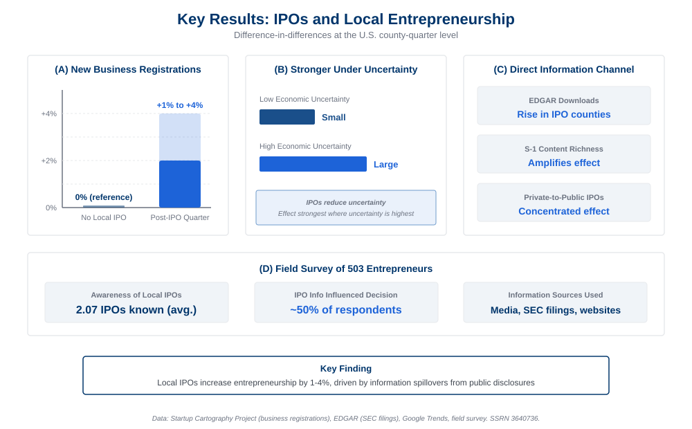

Informing Entrepreneurs? Initial Public Offerings and New Business Formation Accepted
Abstract
We examine the spillover effects of local initial public offerings (IPOs) on new business formation. Our findings reveal a substantial 1% to 4% increase in new business registrations following the introduction of new IPOs. These effects are particularly pronounced in counties facing higher economic uncertainty, highlighting the vital role of IPOs in conveying crucial information, whether through signaling potential success or providing direct information.
Moreover, our research indicates that these effects extend beyond mere "signaling of success" and are largely driven by the valuable information transmitted by the IPO itself. Specifically, new business registrations are significantly influenced by the extent of EDGAR downloads related to the IPO firm's public disclosures and the informational content within the IPO firm's S-1 disclosure. A comprehensive field survey further supports these conclusions, affirming the presence of information spillovers from local IPOs that positively impact new business formation.
Key Findings
IPOs Spur Local Entrepreneurship
A local IPO increases new for-profit business registrations by 1–4% in the following quarter, translating to 4–15 additional new businesses per quarter per county. The effect is identified using a difference-in-differences design with county and quarter-year fixed effects.
Stronger Under Uncertainty
The positive link between local IPOs and entrepreneurship is more pronounced in areas where ex-ante economic uncertainty, measured by wage growth volatility, is notably high. This is consistent with IPOs reducing uncertainty about local business prospects.
Driven by Direct Information, Not Just Signaling
The effect is concentrated around private-to-public IPOs (not spinoffs from existing public companies), is magnified in counties with high levels of S-1 downloads from EDGAR, and is stronger when S-1 filings are richer in informational content. These patterns point to the direct information channel as the primary mechanism.
Survey Confirmation
A field survey of 503 entrepreneurs confirms the archival findings: nearly half of respondents report that information from local IPOs positively influenced their decision to pursue entrepreneurship, with entrepreneurs actively seeking information from SEC filings, company websites, and media coverage.
Figures

Figure 1. Local IPOs increase new business registrations by 1–4%, with stronger effects under high uncertainty and in counties with greater EDGAR download activity around the IPO firm's filings.

Figure 2. Two channels link IPOs to local entrepreneurship: a "signal of success" channel and a "direct information" channel through public disclosures. The evidence favors the direct information mechanism as the primary driver.
Research Contribution
This study makes several contributions to the literature. First, it provides new, causal evidence on the effects of IPOs on local entrepreneurial activity, and the importance of information spillovers in driving these effects. While prior work has studied IPO spillovers on established firms' investment decisions, this paper examines the extensive margin of new business formation—showing that public firm information disclosures have positive externalities that also affect firm entry.
Second, the findings provide a first insight into the process through which potential entrepreneurs obtain relevant information when deciding to launch a new venture. The paper contributes to existing research on the externalities from public firm disclosures by showing that IPO filings serve as a source of actionable business intelligence for would-be entrepreneurs—reducing uncertainty about demand, supply, and cost conditions in a local market.
Third, the paper combines archival evidence with a field survey of 503 entrepreneurs, providing both econometric identification and firsthand confirmation that information from IPO disclosures catalyzes entrepreneurial activity. Entrepreneurs actively seek guidance on product market conditions, operational strategies, technologies, valuation, and potential funding opportunities from IPO-related disclosures.
Identification Strategy
The paper addresses the endogeneity of IPO activity using an instrumental variable approach motivated by Bernstein (2015). The instrument leverages returns on the NASDAQ index during the book-building phase immediately following a firm's IPO filing. Market fluctuations during this phase affect the likelihood of IPO completion but are unlikely to have a lasting impact on the long-term economic activities of the county where the IPO occurs. Using the instrumented IPOs, the authors continue to observe a positive relationship between IPOs and new business registrations. Entropy balancing matching provides additional robustness.